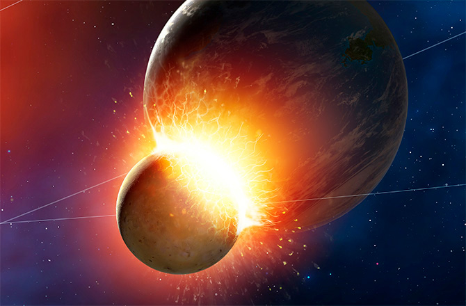

The leading theory of the Moon’s origin is that a Mars-sized body collided with Earth approximately 4.5 billion years ago, and the resulting debris from both Earth and the impactor accumulated to form our natural satellite.
The newly formed Moon was in a molten state. Within about 100 million years, most of the global “magma ocean” had crystallized, with less-dense rocks floating upward and eventually forming the lunar crust.
